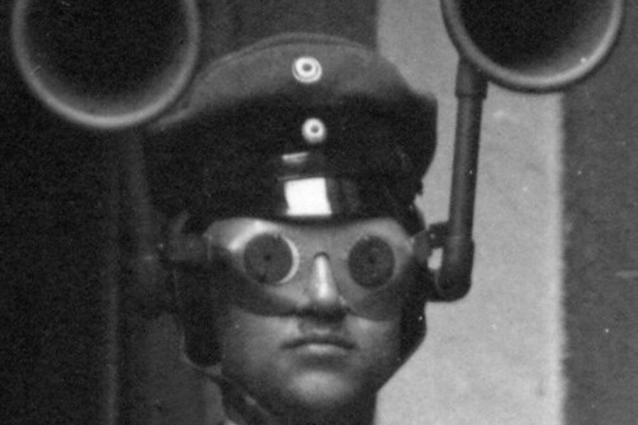

▶
Latest
GAFU
A short film by Timothy Buckley.

- Sail My Ship Alone2021 · 3:25
- ICANSEEIT2022 · 4:34
- Talk Walk2014 · 2:24
- Looking for Mr. Rummage2017 · 1:08:49
Twelve recordings, 2014 to 2024. Streams from SoundCloud.